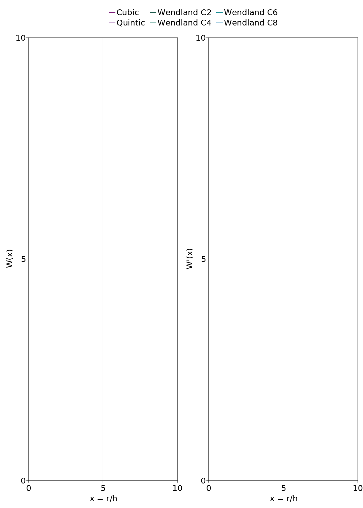

Kernels
This package supplies a number of kernels frequently used in Smoothed-Particle Hydrodynamics (SPH), as well as functions to evaluate their values and derivatives in 1D, 2D and 3D.
These kernels include the B-splines (Cubic and Quintic) suggested in Monaghan & Lattanzio (1985) and the Wendland functions (WendlandC2, WendlandC4, WendlandC6) and WendlandC8 (Wendland 2009) as suggested in Dehnen & Aly (2012).

Defining Kernels
We use multiple dispatch to make to conform to Julia coding standards and make the code more readable.
To use e.g. a 3D WendlandC6 kernel use
k = WendlandC6(3)This will default to a 3D kernel with a precision defined by the system OS (usually Float64). If you want to use a Float32 kernel you can define the precision as the (optional) first argument
k = WendlandC6(Float32, 3)Evaluating Kernels
To evaluate a kernel you need to use the function
kernel_value(k::AbstractSPHKernel, u::Real, h_inv::Real)where AbstractSPHKernel is the supertype for an implemented SPH kernel, $u = \frac{x}{h}$ is the distance to the kernel origin in measures of the smoothing length and h_inv is the inverse of the smoothing length.
You need to define the dimension of the kernel in the kernel <: AbstractSPHKernel, as explained before.
If you want your code to look a little more fancy you can also use the alternative functions 𝒲.:
𝒲( kernel::AbstractSPHKernel, u::Real, h_inv::Real) = kernel_value(kernel, u, h_inv)As an example:
# Wendland C6 kernel with double precision in 3D
k = WendlandC6(Float64, 3)
# distance between the particle and the origin of the kernel
r = 0.5
h = 1.0
h_inv = 1.0/h
u = r * h_inv
# kernel value at position r
val = 𝒲(k, u, h_inv)
println("val = $val")val = 0.40442005421590166Evaluating Derivatives
Similar to Evaluating Kernels you can evluate a kernel derivative with
kernel_deriv(k::AbstractSPHKernel, u::Real, h_inv::Real)or in the fancy way:
d𝒲(kernel::AbstractSPHKernel, u::Real, h_inv::Real) = kernel_deriv(kernel, u, h_inv)Bias Correction
You can correct for the kernel bias of the Wendland kernels as described in Dehnen & Aly (2012), Eq. 18 + 19 with the functions:
bias_correction(kernel::AbstractSPHKernel, density::Real, m::Real, h_inv::Real, n_neighbours::Integer)or again in the fancy way
δρ(kernel::AbstractSPHKernel, density::Real, m::Real, h_inv::Real, n_neighbours::Integer) = bias_correction(kernel, density, m, h_inv, n_neighbours)
This will return a new value for the density:
density = 1.0
kernel = WendlandC6(3)
# correct density
density = bias_correction(kernel, density, 1.0, 0.5, 295)
println("density = $density")density = 0.9991237081365336